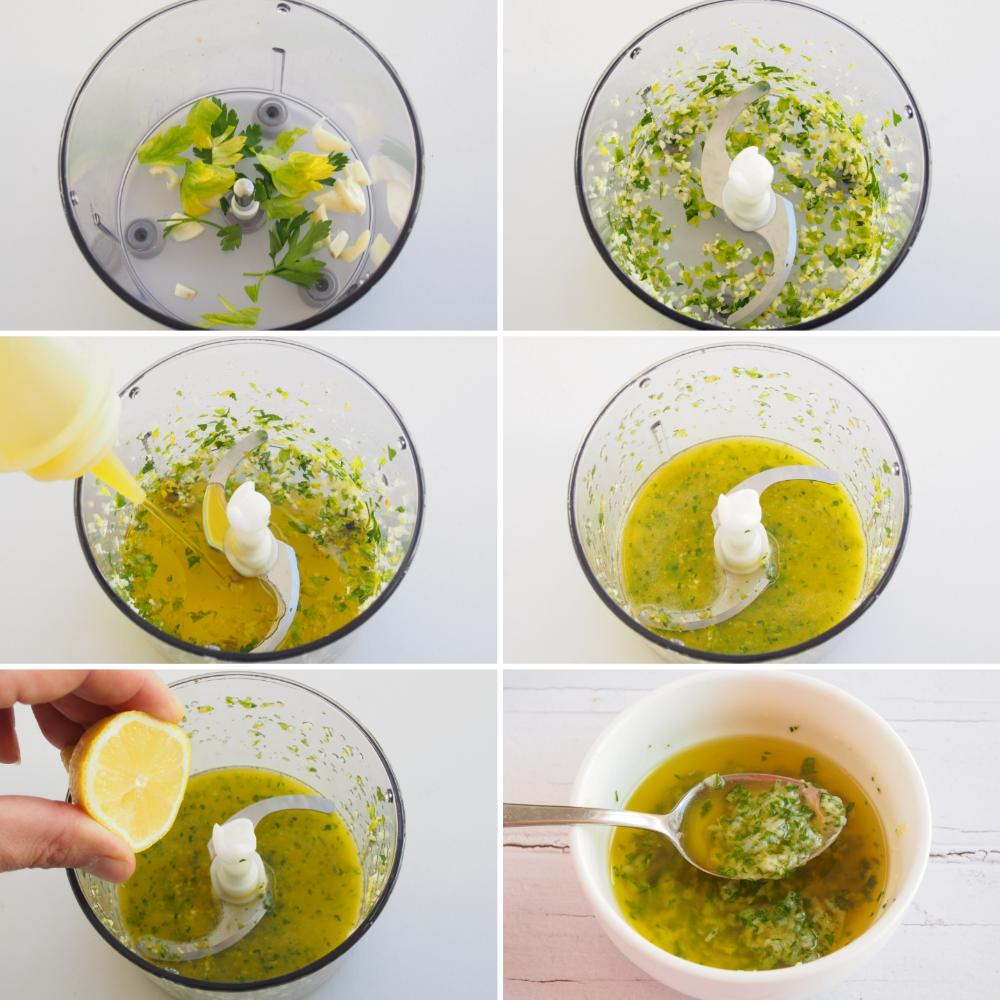

Veamos cómo hacerlo paso a paso
Zamburiñas al Ajillo
Paso 1: Ingredientes
- 12 zamburiñas
- 4 dientes de ajo
- Perejil fresco picado
- 100 ml de aceite de oliva virgen extra
- Sal al gusto
- Pimienta negra al gusto
- 1 chorrito de vino blanco
, finely chopp.webp)
Paso 2: Preparación
Limpiamos bien las zamburiñas bajo agua fría y las dejamos escurrir sobre papel absorbente.
Pelamos y picamos finamente los ajos. Picamos también el perejil fresco.

Paso 3: Cocción
En una sartén grande, calentamos el aceite de oliva a fuego medio. Añadimos los ajos picados y los doramos ligeramente.
Incorporamos las zamburiñas con la carne hacia abajo y las cocinamos durante 1-2 minutos.
Agregamos un chorrito de vino blanco, salpimentamos al gusto y espolvoreamos con el perejil picado.
Cocinamos un minuto más y retiramos del fuego.
Servimos caliente acompañadas de pan para disfrutar de la deliciosa salsa.